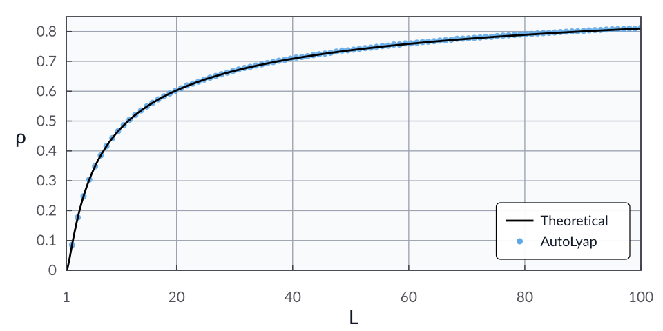

The triple-momentum method
Problem setup
Consider the unconstrained minimization problem
where \(f : \calH \to \reals\) is \(\mu\)-strongly convex and \(L\)-smooth, with \(0 < \mu < L\).
Let \(q=\mu/L\) and define
For initial points \(x^{-1},x^0\in\calH\), the triple-momentum method [VSFL18] is given by
In this example, we search for the smallest contraction factor \(\rho\in[0,1)\) provable using AutoLyap such that
where \(x^\star\in\Argmin_{x\in\calH} f(x)\).
Model the problem in AutoLyap and search for the smallest rho
\(f\) is modeled by
SmoothStronglyConvex.The optimization problem is represented by
InclusionProblem.The update rule is represented by
TripleMomentum.Distance-to-solution parameters are obtained with
IterationIndependent.LinearConvergence.get_parameters_distance_to_solution.The contraction factor is searched with
IterationIndependent.LinearConvergence.bisection_search_rho.
Run the iteration-independent analysis
This example uses the MOSEK Fusion backend (backend="mosek_fusion").
Install the optional MOSEK dependency first:
pip install "autolyap[mosek]"
from autolyap import IterationIndependent, SolverOptions
from autolyap.algorithms import TripleMomentum
from autolyap.problemclass import InclusionProblem, SmoothStronglyConvex
mu = 1.0
L = 4.0
problem = InclusionProblem([SmoothStronglyConvex(mu=mu, L=L)])
algorithm = TripleMomentum(mu=mu, L=L)
solver_options = SolverOptions(backend="mosek_fusion")
# License-free option:
# solver_options = SolverOptions(backend="cvxpy", cvxpy_solver="CLARABEL")
P, p, T, t = IterationIndependent.LinearConvergence.get_parameters_distance_to_solution(
algorithm
)
result = IterationIndependent.LinearConvergence.bisection_search_rho(
problem,
algorithm,
P,
T,
p=p,
t=t,
S_equals_T=True,
s_equals_t=True,
remove_C3=True,
solver_options=solver_options,
)
if result["status"] != "feasible":
raise RuntimeError("No feasible Lyapunov certificate in the requested rho interval.")
rho_autolyap = result["rho"]
rho_theory = (1.0 - (mu / L) ** 0.5) ** 2
print(f"rho (AutoLyap): {rho_autolyap:.8f}")
print(f"rho (theory): {rho_theory:.8f}")
What to inspect in result:
result["status"]:feasible,infeasible, ornot_solved.result["solve_status"]: raw backend status.result["rho"]: certified contraction factor when feasible.result["certificate"]: Lyapunov certificate matrices/scalars.
The computed value rho (AutoLyap) matches, up to solver numerical tolerances,
the theoretical rate expression for the triple-momentum method
[VSFL18, Theorem 1 and Corollary 1]:
Equivalently,
Sweeping over 100 values of \(L\) on \((1,100]\), with \(\mu=1\) fixed, gives the plot below. The theoretical rate is shown in black and the MOSEK-backed AutoLyap certificates as blue dots.
{kind=link}

References
Bryan Van Scoy, Randy A. Freeman, and Kevin M. Lynch. The fastest known globally convergent first-order method for minimizing strongly convex functions. IEEE Control Systems Letters, 2(1):49–54, January 2018. doi:10.1109/lcsys.2017.2722406.